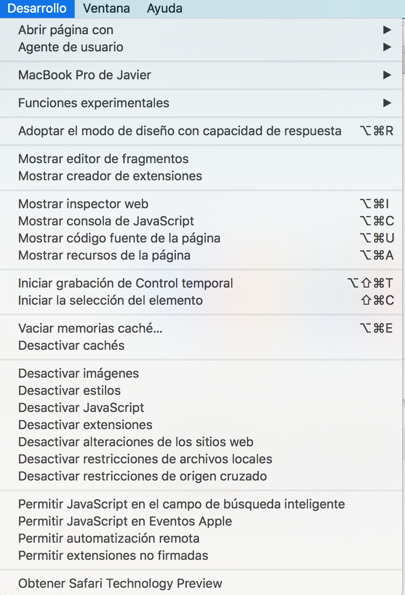
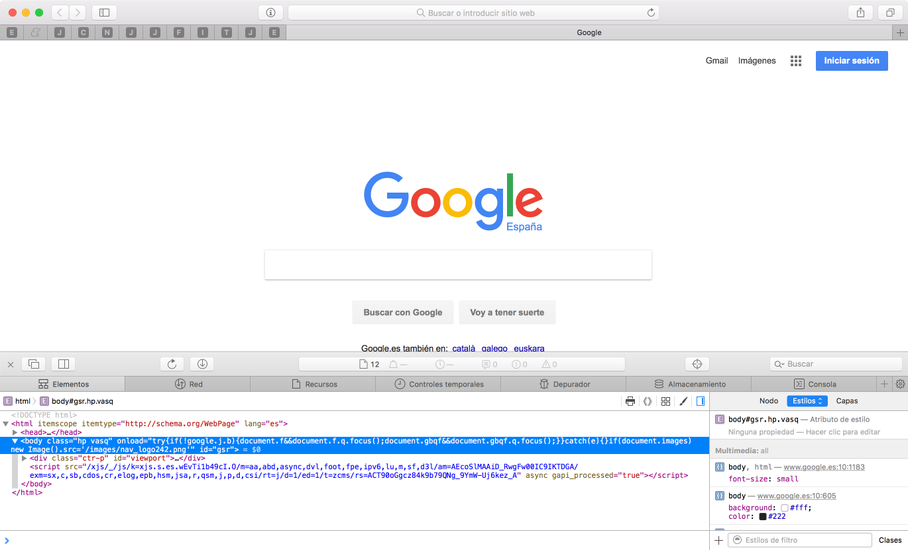

5.1.1.- Safari.
Safari es el navegador web desarrollado por Apple. Dispone de un amplio conjunto de herramientas para desarrolladores web. Desde la pestaña Desarrolladores, se puede acceder a un amplio abanico de herramientas para el desarrollo web.

. Opciones de desarrollo de Safari (CC0)
Entre las distintas herramientas nos encontramos el inspector web, que puede ejecutarse haciendo clic en la opción "Mostrar inspector web". Podremos analizar todo el código HTML y CSS de cualquier página web, además podremos realizar modificaciones sobre el mismo en tiempo real, modificaciones que solo estarán visibles en nuestro navegador y de forma temporal, hasta que recarguemos la página.

. Inspector web en Safari (CC0)